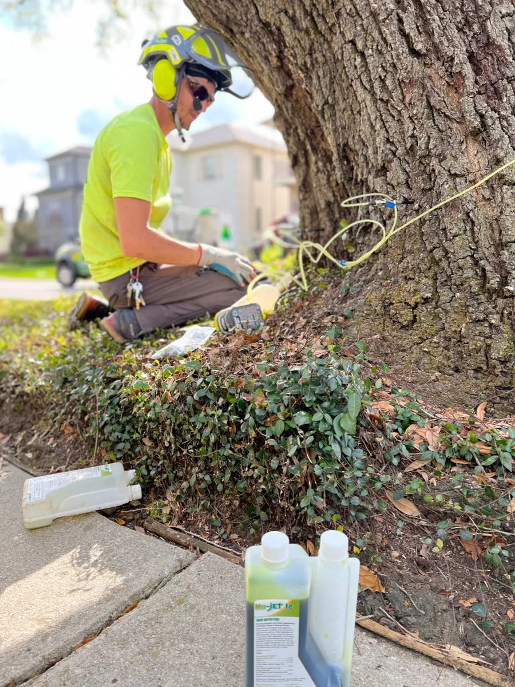

Best Practices for Tree Fertilization
Fertilization is one of the simplest ways to keep trees in good condition, and A Perfect Cut Tree follows the practices below when we fertilize.
Different types of fertilizer supply nutrients such as nitrogen, phosphorus, potassium, iron, and zinc. Applied to the soil over a tree’s roots, they give the tree more to draw on for growth and overall health.
A well-nourished tree is generally better able to handle pests, disease, drought, and heat. That is the main reason to fertilize when the soil or the tree shows a need.
Urgent or unsafe?Call an Arborist: (504) 732-0779


Appropriate Amounts Of Fertilizer To Use
Too much fertilizer can burn roots and damage foliage, so know the right amount for each tree species before you apply any.
Here are some general guidelines for applying fertilizer to trees:
- Base the amount on a soil test and the product label instead of guesswork.
- For established trees, use a slow-release fertilizer matched to what a soil test shows is missing.
- For new or young trees, use a complete fertilizer and follow the manufacturer’s instructions.
Test soil pH regularly before you fertilize. pH affects which nutrients a tree can take up, and a test shows whether an adjustment is needed.
When To Apply Fertilizer
Timing matters. Apply fertilizer while the tree is actively growing, and check the best timing for each species, since needs vary.
Water deeply after applying fertilizer so it moves into the soil and reaches the roots.

How To Apply Fertilizer To Trees
Choose a fertilizer suited to your tree species, since different trees have different needs, and check the label for its balance of nitrogen, phosphorus, and potassium.
Follow the label rate. Spread the fertilizer evenly over the root zone, keep it away from the trunk and foliage, and break up any clumps.

Signs Of Overfertilizing Trees
Too much fertilizer can be as harmful as none. Excess nutrients upset the soil balance and push excessive leaf growth. Signs include yellowing or wilting leaves, early leaf drop, stunted root and stem growth, weak branches, and dieback. Excess nitrogen can also raise the risk of disease and pests.
If you think a tree has been overfertilized, remove any excess fertilizer from around the base and water deeply to flush the rest out of the root zone.
Start Making Your Trees Healthier with These Practices
A Perfect Cut Tree includes fertilizer application in our tree care services, so your trees get the nutrients they need without the guesswork.
We can spot signs of overfertilization and help you choose the right fertilizer. Contact us today to talk about fertilizing your trees.
What to Photograph From a Safe Distance
Photos and video show us the tree, the property around it, how we would reach it, and any visible hazards.


Tree down or a broken limb?
Skip the photos and call. Calls are answered 24/7.
(504) 732-0779Office hours: Monday to Friday 7 AM to 5 PM, Saturday 7 AM to 3 PM, closed Sunday.


Ready to Show Us Your Tree?
Show us the tree. An arborist reviews what you send. Photos give us a first look. Some trees need an in-person visit before we can make a final recommendation.